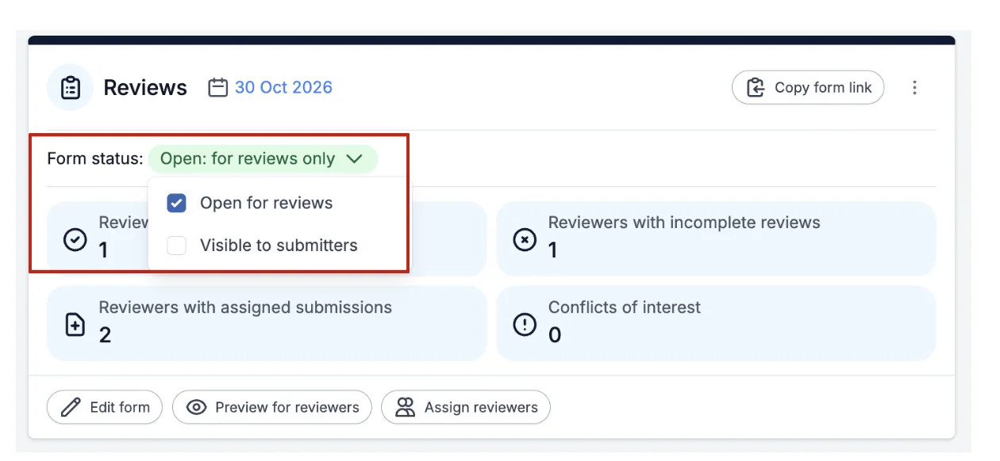
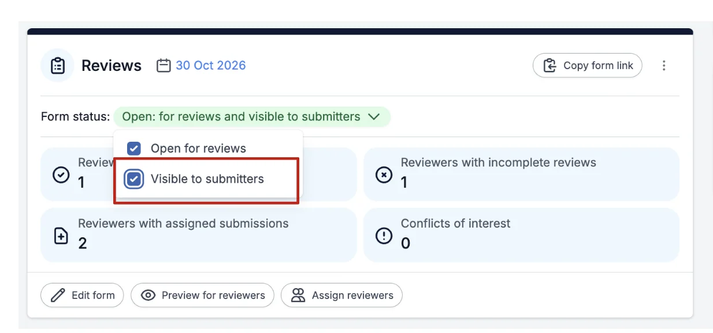
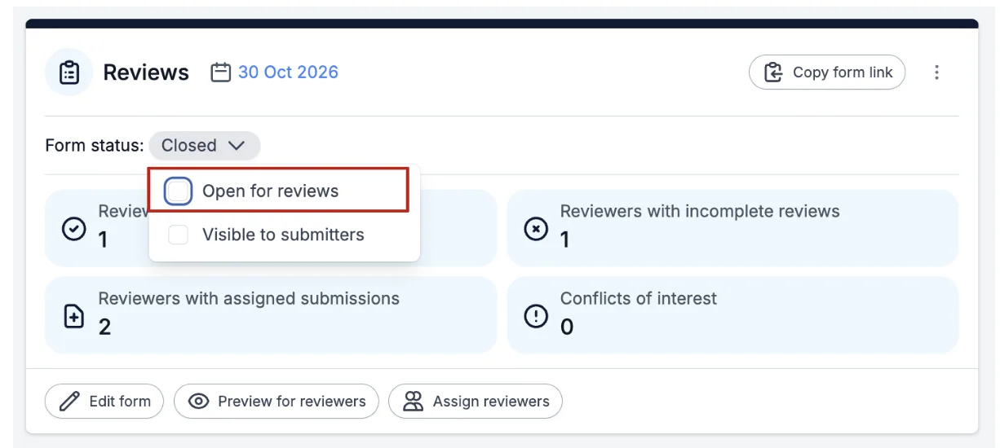
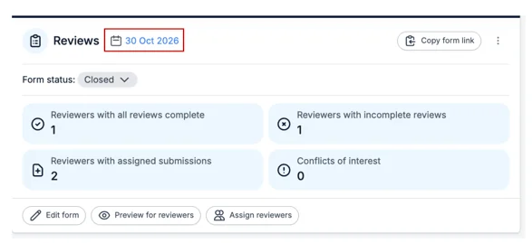
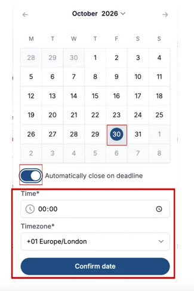
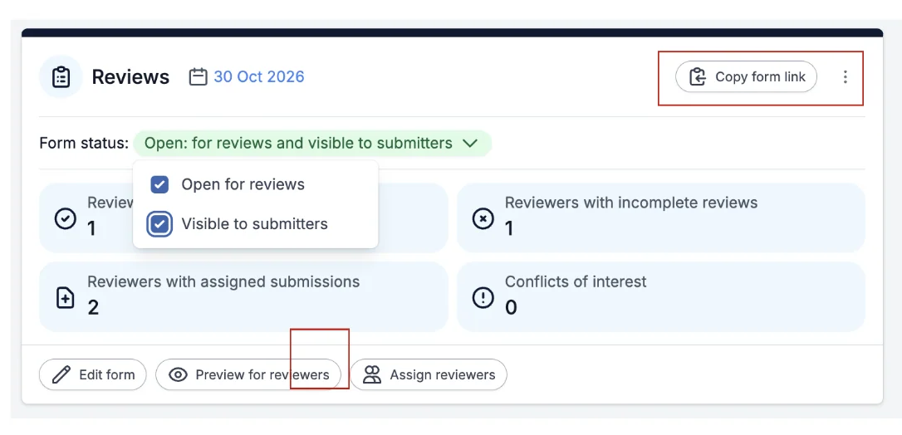

Opening and closing reviewing
For event organisersNot an organiser?
In order to make the review system live, you will need to open reviews.#
Skip to written instructions.
Go to Event dashboard → Scroll down to the Reviews panel
To allow reviews, click on the drop down box next to Form Status, and tick the box next to Open for Reviews.

If you want your submitters to be able to view the reviews of their abstract then tick the box next to Visible to Submitters.

To stop/close reviews all you need to do is untick the box next to Open for Reviews.

Automatically Close Reviews
You can set a deadline for completing reviews, and for the reviews to be automatically closed.
To automatically close your reviews, on the Review Panel click the Calendar icon next to Reviews.

Next 'toggle on" the Automatically close deadline selector and select the date, time and what timezone for when you want your reviews to be closed, then click the Confirm Date Button.

When you are ready to publish the review form, click on the Copy form link, found at the top right of the Reviews Panel to copy the link.


Didn't solve it? Ask our support team
No question is too small, and there's no charge for asking. Raise a ticket and someone who knows the software will pick it up.
Did this page solve it?
Thanks — this helps us fix it.